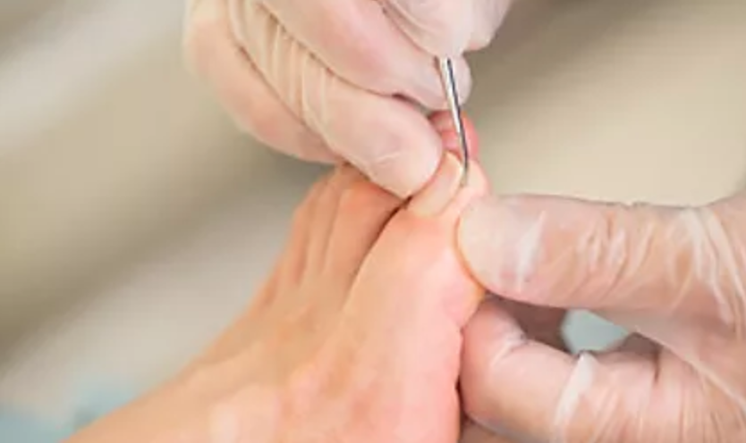

CASE.01
股関節の違和感
- 診断
・週2回の物量機械で3週間と足底装具使用。 - 結果
・違和感の消失。
SCROLL
アシケアでは足専門の医師がカウンセリングを行います。
オンラインなのであなたに合った方法で、いつでも好きな場所で受けることができるサービスです。
希少!?
足専門の
お医者
こどもの足は骨が成長途中であり、非常に柔らかく不安定です。その大切な時期の小さなトラブルを見逃さず、原因を精査し、適切な治療方針をご提示していきます。

足の「巻き爪」は、間違った爪切りや「外反母趾」「足の形に合わない靴」などで起こります。根本的原因を突きとめ、患者様一人ひとりに必要な治療を行います。
歩き方がおかしいと言われる方、歩き方を直したいけど、どうしたらよいか分からない方などは是非ご相談ください。専門医が細かくチェック、指導します。
この他、足や歩行にトラブルがある方は
お気軽にご相談ください。